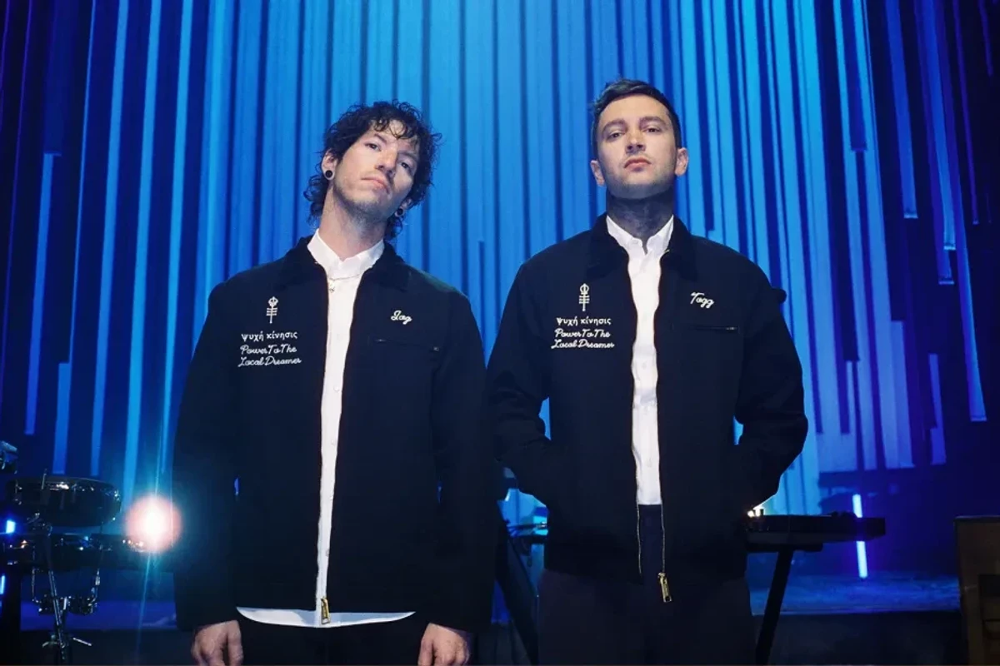

Twenty One Pilots (TØP) is a duo from Columbus, Ohio, USA, consisting of Tyler Joseph and Josh Dun. They are known for their hybrid style, which spans pop, rock, hip-hop, and electronic music. They are widely acclaimed for their narrative album concepts, intense stage energy, and engaging audience interactions. For more information, see wikipedia.
I love Twenty One Pilots because their songs seamlessly blend melody and emotional expression, boasting sing-along hooks while directly addressing themes like anxiety, loneliness, and self-reconciliation. Whether it's the layered arrangements in their studio recordings or the drumming and interplay in their live performances, they resonate and energize me across a range of emotions.
